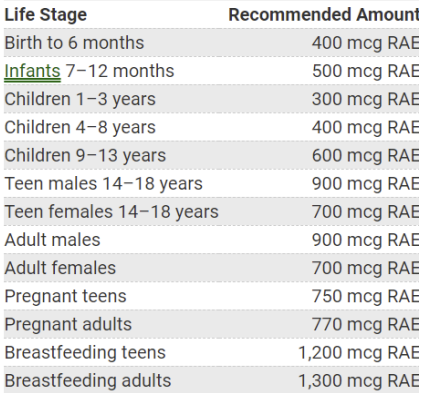

Change your goals here...
Macronutrient Information
Trans fat can naturally occur in specific animal products, including milk and meat. Additionally, it is frequently artificially synthesized to enhance the flavor of food products. Scientific research has established a correlation between trans fat consumption and an elevated risk of heart failure, strokes, and the onset of diabetes. Notably, food items may be labeled as containing 0 grams of trans fat if they contain less than 0.5 grams per serving. Identification of trans fat content can also be achieved by examining product ingredients for the presence of partially hydrogenated oils. In light of these health considerations, it is recommended to restrict trans fat intake to safeguard cardiovascular well-being, aligning with an overall dietary approach that limits saturated fat to approximately 5 percent of daily caloric intake. People who should avoid saturated fats: Seniors with heart risk and past heart conditions, Middle aged people with high amounts of cholesterol and/or genetic disposition to heart conditions.
Saturated fats are characterized by their solid state at room temperature
and are considered an unhealthy form of dietary fat. Predominantly sourced from animal
products such as meat and dairy, common examples include beef, lamb, pork, and butter.
Scientific evidence supports the association of saturated fat consumption with arterial clogging,
thereby amplifying the risk of heart attacks and heart disease. It is advisable to limit saturated
fat intake to approximately 5 percent of one's daily calorie allowance as a precautionary
measure for maintaining cardiovascular health.
People who should avoid saturated fats:
Seniors with heart risk and past heart conditions, Middle aged people with high amounts of
cholesterol and/or genetic disposition to heart conditions.
Monounsaturated fat is frequently present in oils and various types of nuts. Distinguished by their liquid state at room temperature and solidifying in colder conditions, these fats play a crucial role in mitigating the risk of heart disease and strokes when consumed moderately. Additionally, monounsaturated fat serves as a source of vitamin E, contributing to overall nutritional well-being.
Polyunsaturated fat, deemed a healthy dietary component, is prevalent in both plant and animal sources, including salmon, vegetable oils, and specific nuts. This type of fat provides essential fatty acids crucial for brain function and contributes to lowering the risk of heart disease. Additionally, polyunsaturated fat plays a role in blood sugar regulation, reducing the likelihood of developing diabetes. As a dietary guideline, it is advisable to limit polyunsaturated fat intake to no more than 25 percent of daily caloric intake for optimal health benefits.
Carbohydrates are the body's main source of energy...
Protein serves a crucial role in the body, contributing to the building and repair of muscles and bones. Found prominently in meat, fish, eggs, dairy products, seeds, and nuts, protein is an essential dietary component. For the average person, a recommended intake is around 7 grams of protein per 20 grams of body weight. However, this requirement may vary based on factors such as muscle breakdown resulting from weightlifting or other strenuous physical activities, necessitating additional protein intake for complete muscle redevelopment.
Calcium plays a vital role in supporting healthy bones and is essential for muscle contraction, nerve function, and maintaining a regular heart rhythm. In instances where the body lacks a sufficient amount of calcium for its functions, it may draw from the calcium stored in bones, potentially leading to instability. Dairy products are a common source of calcium, and it is recommended to ensure a daily intake of around 1000 mg of calcium to meet the body's requirements for optimal health and functionality.
Iron is a crucial mineral in the body essential for growth. It facilitates the formation of proteins that transport oxygen throughout the blood and to muscles. Common sources of iron include lean meat, seafood, nuts, and breads. For specific daily recommendations, refer to the attached chart outlining the recommended daily amount of iron for optimal health and well-being.
Potassium is an essential mineral utilized by all tissues in the body. Its primary functions include activating cell processes and regulating normal fluid levels outside of cells. Additionally, potassium plays a vital role in muscle contraction and blood pressure regulation. Common dietary sources of potassium include dried fruits, beans, potatoes, and oranges. Insufficient potassium levels can result in symptoms such as fatigue, muscle cramps, constipation, and, in severe cases, muscle paralysis. Ensuring an adequate intake of potassium is crucial for maintaining overall health and proper bodily functions.
Zinc, a trace mineral, is essential in small amounts but plays a vital role in numerous bodily processes. It is integral for DNA synthesis, cell growth, protein building, and tissue healing. The recommended daily intake is 11 mg for men and 8 mg for women. Zinc-rich foods include shellfish, beef, pork, nuts, seeds, and whole grains, among other sources. Ensuring an adequate daily intake of zinc is crucial for supporting various physiological functions and promoting overall health.
Sugar, whether added naturally or artificially to food, is often employed to enhance taste and flavor. Elevated sugar consumption has been associated with various health concerns, including obesity, diabetes, and cancer. As a precautionary measure, it is strongly advised to restrict daily sugar intake to no more than 36 grams, acknowledging the potential adverse effects on overall health.
Dietary fiber, a carbohydrate prevalent in fruits, vegetables, nuts, seeds, and grains, is recognized for its beneficial effects on satiety and digestion. Consuming dietary fiber leads to a quicker sense of fullness and facilitates digestion, thereby preventing constipation. It is advisable to incorporate dietary fiber into one's diet gradually to allow for a seamless adjustment and optimize its positive impact on digestive health.
Vitamin A plays a pivotal role in maintaining vision health, supporting the immune system, and promoting growth. Primary dietary sources of this vitamin include fish, dairy products, and eggs. Deficiencies in Vitamin A are rare due to its widespread presence in the majority of foods. The recommended daily intake of Vitamin A varies based on factors such as age, sex, and weight, as outlined in the attached graph.
Vitamin B encompasses a group of vitamins, including B1, B2, B3, B5, B6, B7, B9, and B12. It is advisable to conduct thorough research on the specific vitamin you are consuming, as each member of the B-vitamin complex possesses unique properties and benefits. Understanding the distinct characteristics of each vitamin within the B group contributes to a more informed approach to nutritional intake and overall well-being.
Vitamin C plays a crucial role in infection control and wound healing. Additionally, it is involved in the synthesis of a connective protein present in various bodily systems. The recommended daily intake is 90 mg for men and 75 mg for women. It is important to note that megadosing on Vitamin C is a common practice and can result in adverse effects, including diarrhea, kidney stones, and elevated levels of iron in the blood. Caution should be exercised to ensure optimal intake without exceeding recommended limits.
Vitamin D plays a pivotal role in promoting bone health and growth, with demonstrated benefits in protecting adults from osteoporosis. The primary source of Vitamin D is exposure to UV rays from the sun. Adequate sunlight exposure is crucial for synthesizing Vitamin D in the skin, contributing to its essential functions in maintaining skeletal integrity and overall well-being.